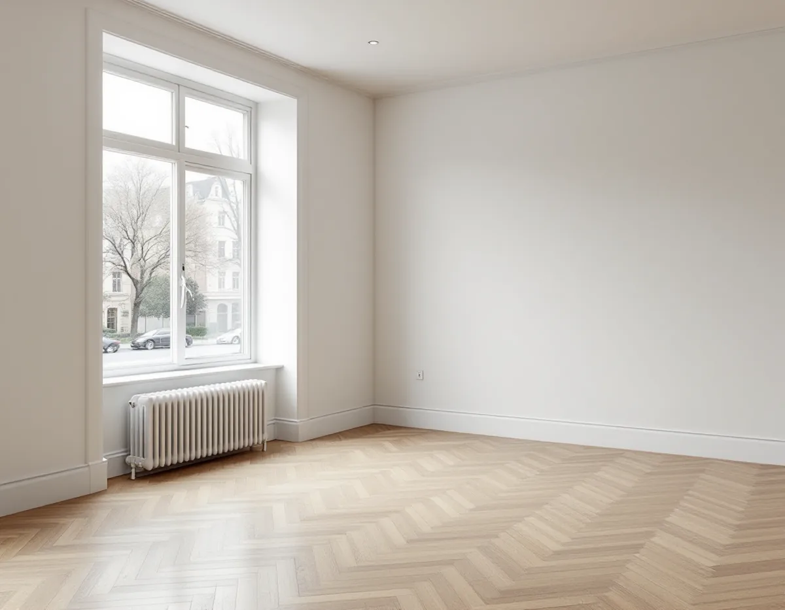
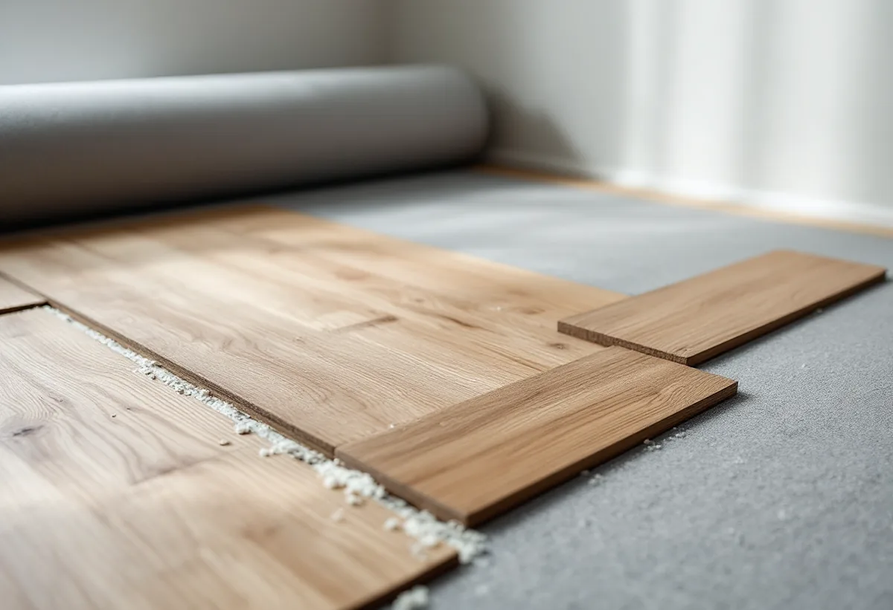

Platsbesök
Vi tittar på det gamla golvet och lyfter en list för att se vad som ligger under.

Ett nytt trägolv märks inte bara i den egna lägenheten.
Beskriv jobbet kort.
Något blev fel. Kontrollera uppgifterna eller ring 08 12 410 276.
Vi tittar på jobbet på plats innan du får offert.
Du ser vad som ingår och vad det kostar.
Vi drar av ROT direkt och sköter ansökan.
Geal Entreprenad AB, Bromma. Org.nr 559303-7566.

Den som bor under hör varje steg om golvet saknar dämpning, och i ett flerbostadshus är det därför ljudet som ofta avgör valet av material. Geal Entreprenad AB lägger parkett, massiva trägolv, laminat och klinker och slipar gamla trägolv på Kungsholmen, och vi börjar med en fråga: vem bor under er?
I stadens områdesfakta finns 42 420 bostäder i flerbostadshus på Kungsholmen. Den vanligaste storleken är två rum och kök med 12 505 lägenheter, följt av ettor med 11 314. Därtill finns 5 265 lägenheter utan kök. Bara en liten del av stadsdelsområdets bostäder ligger i småhus.
I ett flerbostadshus ligger oftast någon annans tak under ditt golv. Ett golv som känns tyst för den som går på det kan ändå höras hos grannen. Därför frågar vi tidigt om vilket golv som låg innan, vad som ligger under och om föreningen har ställt krav på golvbyten.
Golvbranschen beskriver textilgolv som golv med goda stegljudsdämpande egenskaper. En heltäckningsmatta som rivs ut för att ge plats åt ett trägolv tar alltså med sig en del av den dämpning som grannen under har vant sig vid. Mattan påverkar också rumsakustiken, eftersom den absorberar ljud och ger kort efterklangstid i rummet.
Vill man ha ett hårt och lättstädat golv finns andra vägar. Det finns linoleum med ett skikt av korkbaserad linoleum som ger viss fjädrande dämpning enligt SS-EN 687, eller med baksidesbeläggning av plastskum, och dämpande underlag av korkment, papp och skumplast. För PVC-golv finns produkter med akustikbaksida för utrymmen där stegljudsdämpning krävs.
Ett flytande trägolv ligger på ett underlag, och här gäller det att inte välja för mjukt. Golvbranschen skriver att ihållande knarr kan bero på ett ojämnt undergolv eller på en för mjuk foam. Vi följer golvleverantörens anvisningar för vilket underlag som får användas under just det golvet.
Enligt bostadsrättslagen 7 kap. 7 § får du inte utan styrelsens tillstånd göra ingrepp i en bärande konstruktion, ändra ledningar för avlopp, värme, gas eller vatten, ändra ventilationen eller göra någon annan väsentlig förändring av lägenheten. Om ett golvbyte räknas som väsentligt beror på vad som görs, och därför ställer vi frågan till styrelsen innan material beställs. Styrelsen får bara vägra om åtgärden är till påtaglig skada eller olägenhet för föreningen, och ett tillstånd får förenas med villkor.
Lagens 9 § säger att den som bor i lägenheten ska se till att grannarna inte utsätts för störningar som är skadliga för hälsan eller försämrar bostadsmiljön så att de inte skäligen bör tålas. Den säger också att man ska rätta sig efter föreningens särskilda regler. Står det något om golv i ordningsreglerna följer vi det.
Stockholms stad påminner om att ett projekteringsutlåtande för ljud kan behövas vid en väsentlig ändring som kan påverka ljudbilden i en byggnad, och att utlåtandet kan skrivas av en sakkunnig, till exempel en akustiker. Staden råder också den som planerar en ändring att informera grannar eller styrelsen.
Klinker passar i hallen, där grus och väta kommer in, men det är ett hårt material. Keramiska plattor är enligt Golvbranschen tyngre än de flesta andra golvmaterial, och underlaget måste vara tillräckligt bärande, ibland förstärkas. Klinker har en låg vattenabsorption, vanligen 0–6 procent. Ska hallen få klinker och vardagsrummet trä tittar vi på hur skarven mellan materialen ska se ut och om nivåerna går att få jämna utan en hög tröskel.
Badrummet är ett eget våtrumsarbete med tätskikt och golvbrunn, och det beskriver vi under badrumsrenovering på Kungsholmen. Vill du jämföra golvtyperna innan du bestämmer dig finns en genomgång på sidan om golvläggning.
Vi tittar på det gamla golvet och lyfter en list för att se vad som ligger under.
Du får en kort beskrivning av golvet och underlaget att skicka till föreningen.
Rivning, underlag, golv och lister redovisas som egna poster.
Det gamla golvet tas bort och undergolvet rensas och kontrolleras.
Underlag och golv läggs enligt leverantörens anvisningar, med rörelsefog mot väggarna.
Lister och trösklar monteras och vi går igenom skötseln med dig.
Skatteverket ger rotavdrag för att slipa och byta golv i en bostadsrätt och för att byta en plastmatta mot trägolv. I en bostadsrätt gäller avdraget arbete inne i bostaden, alltså innanför väggar, tak och golv, och du ska ha underhållsansvaret för det enligt föreningens stadgar. Arbete i trapphus, entréer och andra gemensamma ytor ger inget avdrag.
Avdraget är 30 procent av arbetskostnaden, högst 50 000 kr per person och år och högst 75 000 kr tillsammans med rutavdrag. Material och resor ger inget avdrag. Geal drar avdraget direkt på fakturan.
Ytan, vilket underlag golvet kräver och hur mycket av det gamla som ska rivas betyder mest. Efter det kostnadsfria platsbesöket får du ett skriftligt kostnadsförslag.
Parkett, trägolv, klinker och slipning.
Golvläggning i Stockholm →Takbyte, takbesiktning och plåtarbeten.
Takläggare på Kungsholmen →Plåttak i stenstaden och funkis i Fredhäll.
Takrenovering på Kungsholmen →Gårdshus vid villorna på Stora Essingen.
Attefallshus på Kungsholmen →Stambyte, stämmobeslut och 30-talshus.
Badrumsrenovering på Kungsholmen →Föreningens stambyte.
Byggföretag på Kungsholmen →Målning av puts och gårdsfasader.
Fasadmålning på Kungsholmen →Slätputs på funkishus, lagad utan synliga skarvar.
Fasadrenovering på Kungsholmen →Stenhusen, funkishusen och bygglovet.
Fönsterbyte på Kungsholmen →Fönstret i bostadsrätten, insida och beslag.
Fönsterrenovering på Kungsholmen →Slipa och lacka golvet i bostadsrätten.
Golvslipning på Kungsholmen →Fläkten, kanalen och föreningen.
Köksrenovering på Kungsholmen →Funkislägenheter, stadgar och ROT i bostadsrätten.
Målare på Kungsholmen →Huvar, skorstenar och genomföringar.
Plåtslagare på Kungsholmen →Förvaring och platsbyggt i små lägenheter.
Snickare på Kungsholmen →Villorna på Stora Essingen.
Takbyte på Kungsholmen →Ny tapet på putsade lägenhetsväggar.
Tapetsering på Kungsholmen →Uterum, kupor och skärmtak.
Tillbyggnad på Kungsholmen →Hela lägenheten från golv till tak.
Totalrenovering på Kungsholmen →Eller ring 08 12 410 276, mån–fre 08–17.
Beskriv jobbet kort.
Något blev fel. Kontrollera uppgifterna eller ring 08 12 410 276.